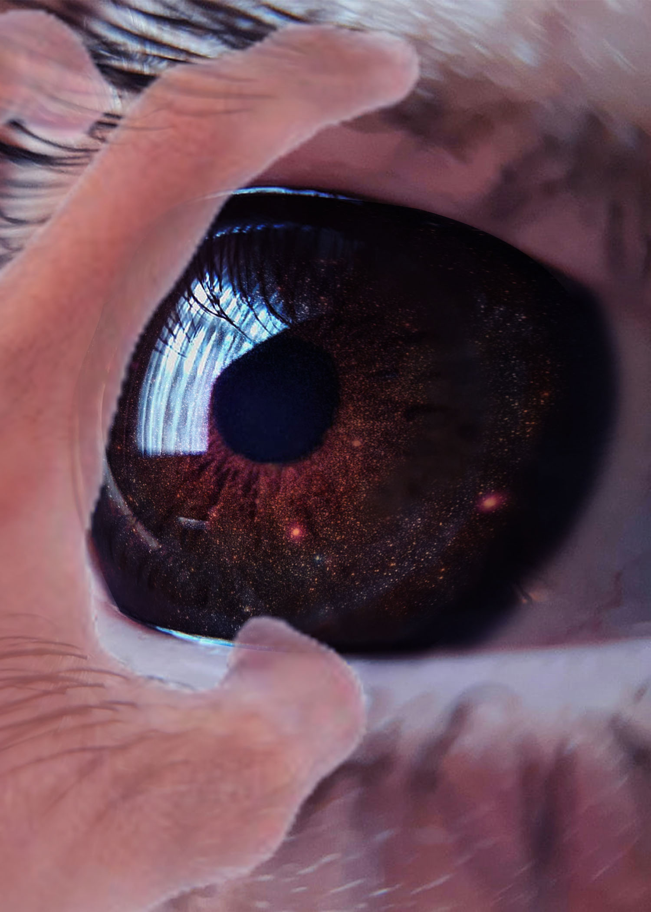
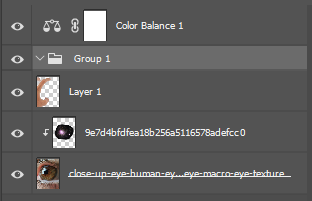

The image I created for this assignment symbolizes the overwhelming nature of knowledge and perception. The galaxy inside the eye represents the vast and infinite amount of information a person can take in, suggesting that what we see is only a small part of a much larger internal experience. The hand pulling the eye open represents the struggle to maintain control and stay grounded in reality when faced with this overwhelming amount of information. Overall, the piece explores the idea of losing one’s sense of reality due to an overload of knowledge, while also attempting to regain clarity and awareness.
To create this photomontage, I started with a close-up image of an eye to establish the main focus of the composition. I then used a space image and blended it into the iris using layer masks to precisely control the edges and placement. A separate image of a hand was added and positioned to create the effect of pulling the eye open, which required careful masking and scaling to match the perspective. I used non-destructive editing techniques such as adjustment layers to modify the color and lighting, including a slight hue shift to give the image a more otherworldly feel. Blending techniques were used to integrate all elements into a cohesive composition.